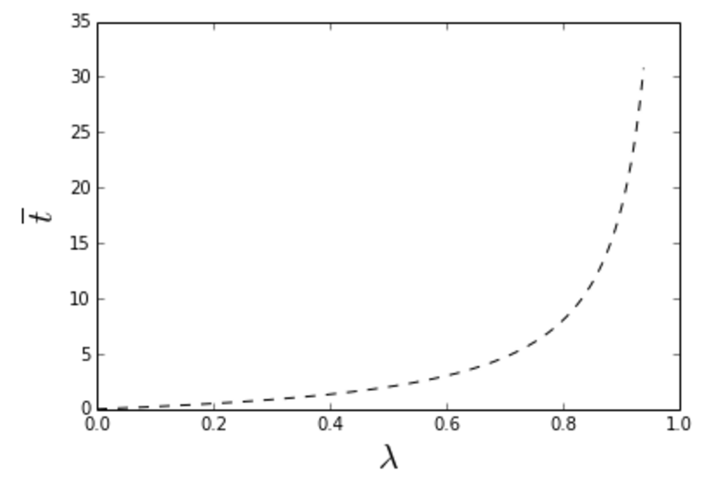

Queries ping a certain computer server at random times, on average \(\lambda\) arriving per second. The server can respond to one per second and those that can't be serviced immediately are queued up. What is the average wait time per query? Clearly if \(\lambda \ll 1\), the average wait time is zero. But if \(\lambda > 1\), the queue grows indefinitely and the answer is infinity! Here, we give a simple derivation of the general result -- (9) below.
Follow @efavdb
Follow us on twitter for new submission alerts!
Introduction
The mathematics of queue waiting times -- first worked out by Agner Krarup Erlang -- is interesting for two reasons. First, as noted above, queues can exhibit phase-transition like behaviors: If the average arrival time is shorter than the average time it takes to serve a customer, the line will grow indefinitely, causing the average wait time to diverge. Second, when the average arrival time is less than the service time, waiting times are governed entirely by fluctuations -- and so can't be estimated well using mean-field arguments. For example, in the very low arrival rate limit, the only situation where anyone would ever have to wait at all is that where someone else happens to arrive just before them -- an unlucky, rare event.
Besides being interesting from a theoretical perspective, an understanding of queue formation phenomena is also critical for many practical applications -- both in computer science and in wider industry settings. Optimal staffing of a queue requires a careful estimate of the expected customer arrival rate. If too many workers are staffed, the average wait time will be nicely low, but workers will largely be idle. Staff too few, and the business could enter into the divergent queue length regime -- certainly resulting in unhappy customers and lost business (or dropped queries). Staffing just the right amount requires a sensitive touch -- and in complex cases, a good understanding of the theory.
In order to derive the average wait time for queues of different sorts, one often works within the framework of Markov processes. This approach is very general and elementary, but requires a bit of effort to develop the machinery needed get to the end results. Here, we demonstrate an alternative, sometimes faster approach that is based on writing down an integral equation for the wait time distribution. We consider only a simple case -- that where the queue is serviced by only one staff member, the customers arrive at random times via a Poisson process, and each customer requires the same time to service, one second.
Integral equation formulation
Suppose the \(N\)-th customer arrives at time \(0\), and let \(P(t)\) be the probability that this customer has to wait a time \(t\geq 0\) before being served. This wait time can be written in terms of the arrival and wait times of the previous customer: If this previous customer arrived at time \(t^{\prime}\) and has to wait a time \(w\) before being served, his service will conclude at time \(t = t^{\prime} + w + 1\). If this is greater than \(0\), the \(N\)-th customer will have to wait before being served. In particular, he will wait \(t\) if the previous customer waited \(w = t - t^{\prime} - 1\).
The above considerations allow us to write down an equation satisfied by the wait time distribution. If we let the probability that the previous customer arrived at \(t^{\prime}\) be \(A(t^{\prime})\), we have (for \(t > 0\))
Here, in the first equality we're simply averaging over the possible arrival times of the previous customer (which had to occur before the \(N\)-th, at \(0\)), multiplying by the probability \(P(t - t^{\prime} - 1)\) that this customer had to wait the amount of time \(w\) needed so that the \(N\)-th customer will wait \(t\). We also use the symmetry that each customer has the same wait time distribution at steady state. In the second equality, we have plugged in the arrival time distribution appropriate for our Poisson model.
To proceed, we differentiate both sides of (\ref{int_eqn}) with respect to \(t\),
The second equality follows after noticing that we can switch the parameter being differentiated in the first. Integrating by parts, we obtain
a delay differential equation for the wait time distribution. This could be integrated numerically to get the full solution. However, our interest here is primarily the mean waiting time -- as we show next, it's easy to extract this part of the solution analytically.
Probability of no wait and the mean wait time
We can obtain a series of useful relations by multiplying (\ref{sol}) by powers of \(t\) and integrating. The first such expression is obtained by multiplying by \(t^1\). Doing this and integrating its left side, we obtain
Similarly integrating its right side, we obtain
Equating the last two lines, we obtain the probability of no wait,
This shows that when the arrival rate is low, the probability of no wait goes to one -- an intuitively reasonable result. On the other hand, as \(\lambda \to 1\), the probability of no wait approaches zero. In between, the idle time fraction of our staffer (which is equal to the probability of no wait, given a random arrival time) grows linearly, connecting these two limits.
To obtain an expression for the average wait time, we carry out a similar analysis to that above, but multiply (\ref{sol}) by \(t^2\) instead. The integral on left is then
Similarly, the integral at right is
Equating the last two lines and rearranging gives our solution for the average wait,
As advertised, this diverges as \(\lambda \to 1\), see illustration in the plot below. It's very interesting that even as \(\lambda\) approaches this extreme limit, the line is still empty a finite fraction of the time -- see (\ref{int5}). Evidently a finite idle time fraction can't be avoided, even as one approaches the divergent \(\lambda = 1\) limit.

Conclusions and extensions
To carry this approach further, one could consider the case where the queue feeds \(k\) staff, rather than just one. I've made progress on this effort in certain cases, but have been stumped on the general problem. One interesting thing you can intuit about this \(k\)-staff version is that one approaches the mean-field analysis as \(k\to \infty\) (adding more staff tends to smooth things over, resulting in a diminishing of the importance of the randomness of the arrival times). This means that as \(k\) grows, we'll have very little average wait time for any \(\lambda<1\), but again divergent wait times for any \(\lambda \geq 1\) -- like an infinite step function. Another direction one could pursue is to allow the service times to follow a distribution. Both cases can also be worked out using the Markov approach -- references to such work can be found in the link provided in the introduction.